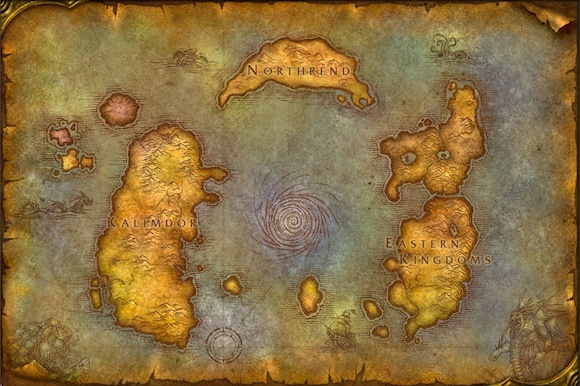

All seems well in Azeroth until Deathwing an evil Dragon Aspect comes to
shatter the world, and destroy Azeroth. Players will be able to level up to
85 and explore six new regions (Mount Hyjal Vashj'ir, Deppholm, Uldum, and
the Twilight Highlands). There are no new classes this expansion but there
are two new races
Races
Goblins (Horde)
Worgen (Alliance)
Azeroth After The Shattering

The swirl in the middle of the map is where the Earth was shattered by
Deathwing, and how players can access the Deepholm Region to help the
Earthen Ring and former Horde Warcheif Thrall repair the world
Lore
A Long Time Ago
After the Old gods were locked away by the Titans and order was restored
to Azeroth, the Titans created the five dragon aspects Nozdormu the brown,
Alexstasza the red, Ysera the green, Malygos the Blue, and Neltharion the
black. Each aspect would do their part to watch over Azeroth. However,
problems arose when the Old Gods convinced Neltharion that he was the
strongest dragon and should rule over all the others. The Old Gods helped
Neltharion gain power, and with this power he became corrupted and tried to
take over Azeroth. Neltharion now called Deathwing, was stopped by the
people of Azeroth and imprisoned in Deepholm.
Deathwing returns
Over many years of being trapped in Deepholm Deathwing slowly began to
regain his power. Eventually he was strong enough to escape from Deepholm in
the middle of the Earth and again try to destroy Azeroth. Deathwings rise
from Deepholm shook Azeroth to its core, and is known as the Shattering
New Members to the Horde and Alliance
The Goblins
The Goblins are a technological group that for a long time were a part of
Azeroth society and lived on the island of Kezan. Until now they were
neither a part of the Horde or the Alliance. However, upon Deathwing's
return from Deepholm, the Goblins of Kezan decided to flee to Kalimdor.
While they were traveling they and a horde ship got attacked by an Alliance
Fleet. Shipwrecked on the island the Goblins found Thrall (Former Warcheif
of the Horde) and saved his life. When he and the Goblins returned to
Kalimdor Thrall invited the Goblins to join the Horde, an invite which they
accepted.
The Worgen
With Thrall gone his replacement Garrosh Hellscream decided that now was
the time for Horde expansion and one region he tried to conquer was Gilneas,
but the Gilneans were more than they appeared. Long ago the Gilneans were
exposed to the worgen curse, turning them into werewolves. The worgen were
able to fight off the Horde and were now exposed to the rest of Azeroth yet
again. The night elves who had long ago also experienced the worgen curse
decided to help the Worgen gain control of the werewolves powers and in time
were welcomed to join the Alliance.
Raids
Baradin Hold: Following the Second War, the ruined fortress of Baradin
Hold on the remote island of Tol Barad was converted into a prison for
some of the most dangerous forces on Azeroth. Yet with the devastation
wrought by the Cataclysm, the prison's integrity has been compromised.
Now as the Horde and Alliance vie for supremacy on the island, the
liberation of its forgotten horrors may be at hand.
Blackwing Decent: Nefarian and his warped attempts to create a new
breed of dragon were thought to be defeated after his death in Blackwing
Lair. Yet tales have emerged that his father, Deathwing, has reanimated
Nefarian and set him to work in Blackwing Descent. The gruesome
experiments being conducted there are feared to be on a level of
wickedness far surpassing Nefarian's previous crimes against
nature.
Dragon Soul: Forged by Deathwing during the War of the Ancients, the
Dragon Soul harnessed the combined power of the dragonflights until it
was ultimately destroyed. Through the Caverns of Time, Thrall and the
remaining dragonflights were able to recover the powerful artifact
before its destruction. Now they have rallied at Wyrmrest Temple in a
desperate attempt to use the might of the Dragon Soul against Deathwing
himself.
Firelands: The Firelands is the molten domain forged by the titans to
house Ragnaros and his wayward minions. Following Deathwing's emergence
into Azeroth, Ragnaros and his servants surged onto the slopes of Mount
Hyjal before being driven back by the sacred mountain's valiant
defenders. Now Ragnaros is rallying his loyalists to defend the
Firelands from Azeroth's champions.
Bastion of Twilight: The Bastion of Twilight stands as a dark symbol
of the Old Gods' burgeoning power on Azeroth. Various branches of the
Twilight's Hammer dwell deep beneath the towering form--considered the
cult's foremost command center--along with their twisted leader,
Cho'gall. There, he and his servants conspire to bring the Old Gods'
apocalyptic visions to fruition by bleeding Azeroth of all sanity, hope,
and life.
Throne of the Four Wings: Al'Akir the Windlord's personal lair, the
Throne of the Four Winds, glides high among Skywall's boundless vistas.
Now that the barriers of the Elemental Plane have been ruptured, Al'Akir
is free to travel Azeroth's winds at his leisure. He has mustered his
fiercest tempests to scour Uldum of life and seize control of the
mysterious titan-forged Halls of Origination.